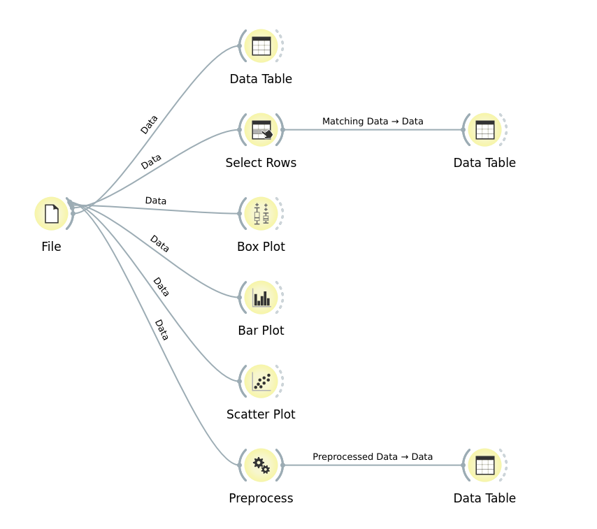

데이터를 불러오고(File) → 확인하고(Data Table) → 걸러내고(Select Rows) → 이상치를 찾고(Box Plot) → 그래프로 비교하고(Bar Plot·Scatter Plot) → 정규화(Normalize)까지, 오렌지의 핵심 위젯 7가지를 1세대 포켓몬 18마리의 실제 능력치 데이터로 순서대로 연습해. 각 단계마다 실제로 Orange3를 직접 실행해서 캡처한 화면이 함께 있어 — 여기서 감을 잡고, 진짜 오렌지 캔버스에서 그대로 따라해봐.
오렌지는 코드를 치지 않고, 위젯(widget)이라는 네모 상자를 캔버스에 놓고 선으로 연결해서 데이터를 분석하는 프로그램이야. 위젯 하나하나가 "데이터 불러오기", "표로 보기", "조건으로 거르기", "그래프 그리기" 같은 하나의 역할을 맡아.
1세대 포켓몬 18마리의 체력·공격·방어·스피드·무게 데이터야. (공개 도감 자료 기준 실제 수치이고, 타입도 불·물·전기·노말·고스트·에스퍼·바위 7가지 그대로 사용해.)
지금까지 연습한 위젯들을 모두 연결하면, 실제 오렌지 캔버스는 이런 모습이 돼. 하나의 File에서 시작해 여러 갈래로 뻗어나가며 데이터를 다양하게 살펴보는 거야. Select Rows와 Preprocess는 자기 혼자서는 계산된 값을 안 보여주기 때문에, 그 뒤에 각각 Data Table을 한 번 더 연결해서 실제 결과를 확인하는 것도 잊지 마. (아래는 실제로 Orange3를 실행해서 캡처한 캔버스 화면이야.)
